Starting Up
Using Github to implement Agile processes
Agile processes management is an iterative development methodology which revolves around version control and developing improvements through testing and trialling. Each sprint or version my program is tested and finished before creating a new file and coyping what has been done across. This allowed me to access previous versions wihtout having to undo any of my work. Github is a version control software which I have been using to store each version or sprint of my code. It has also provided me with basic Kanban boards which I have used to create and overall plan or my entire program as well as individual plans or each sprint. At the end of each sprint, I complete a git 'commit' which uploads the most recent version of my sprint onto Github.
Brief
For this project I would like to create a drawing page where a user is able to draw different coloured shapes depending on their preferences. I would also like to include some animation and a paintbrush feature if possible.
Project Backlog
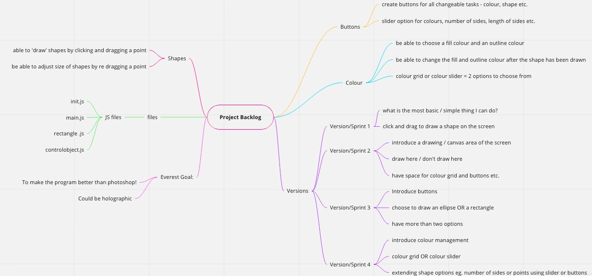Project Backlog Kanban
Sprint One
Aim:
The aim of my first sprint is to create a webpage with a canvas that is able to draw a rectangle by clicking and dragging the mouse and then releasing it.
Plan / Kanban
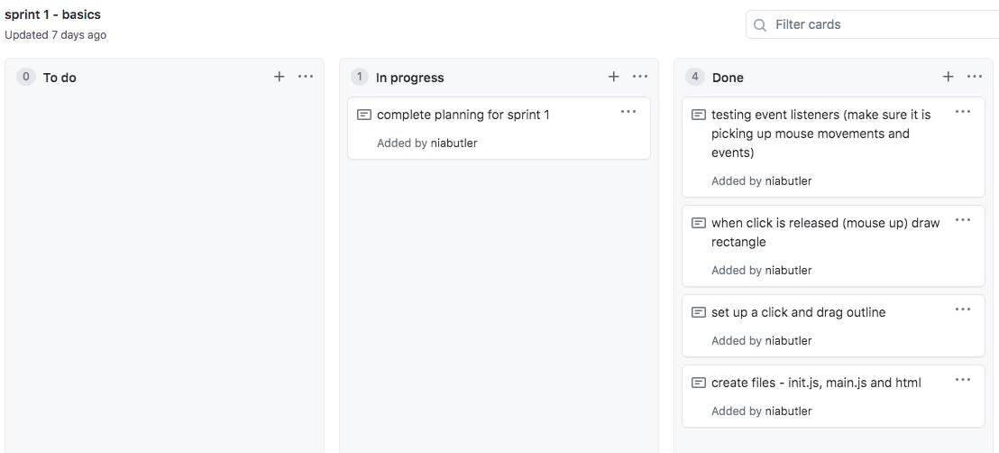Planning
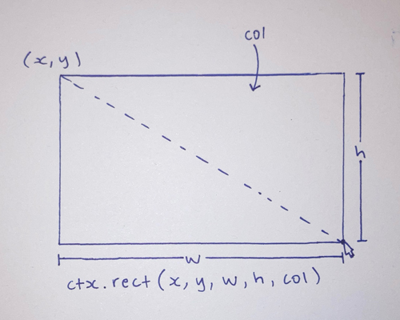Link to the Canvas Page: Sprint 1 Canvas Webpage
Testing
Test 1
The first test I conducted was to ensure that the event listeners were picking up mouse events (such as mouse down, mouse up and mouse move). When testing the function of this code, I also had to make sure the mouse events were only being picked up inside the canvas, not any other place on the screen. I ensured this by writing code that returned the coordinates of the mouse as it was moving and if an event happened such as mouse up or down, it would print the feedback in the console.
Test 2
The second test was an overall test to check that everything that I planned for in sprint 1 was working. Here, you can see the mouse being clicked down, dragged and then released to draw a rectangle / square to the size of the users choice. The mouse is able to go into negative values without it having an effect on the final shape and the shape is then filled when the mouse is released. New rectangles overlap existing ones which in the future will enable users to create layered drawings, another asset to the canvas.
Reflect
This version I created a basic canvas. It functions properly as the user is able to click and drag the mouse, then release it to draw a rectangle. Although it is very basic, it has given me a solid base that I can now add different functions to, to create a semi-complex drawing canvas.
Sprint Two
Aim:
The aim of my second sprint was to create a dedicated drawing canvas within the webpage, separate from where all of the buttons and sliders will go, in order to make the canvas easier to use for the user. This sprint involves boundary checks and some thought into the colours and aesthetics of the page also.
Plan / Kanban
Option A
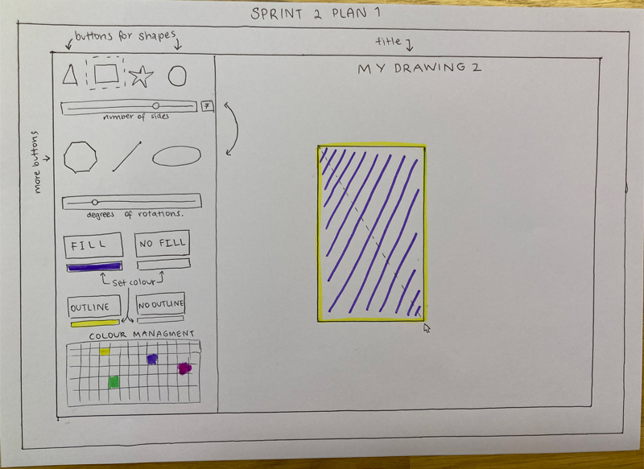The first plan I came up with has a side bar with all of the options/functions on it. I think that with the side bar to the left, it keeps all of the buttons/options together but out of the way of the canvas so it is easy to distinguish between them. Putting it to the side also means that there is a blank canvas with nothing covering it and no distractions.
Outcome of option A
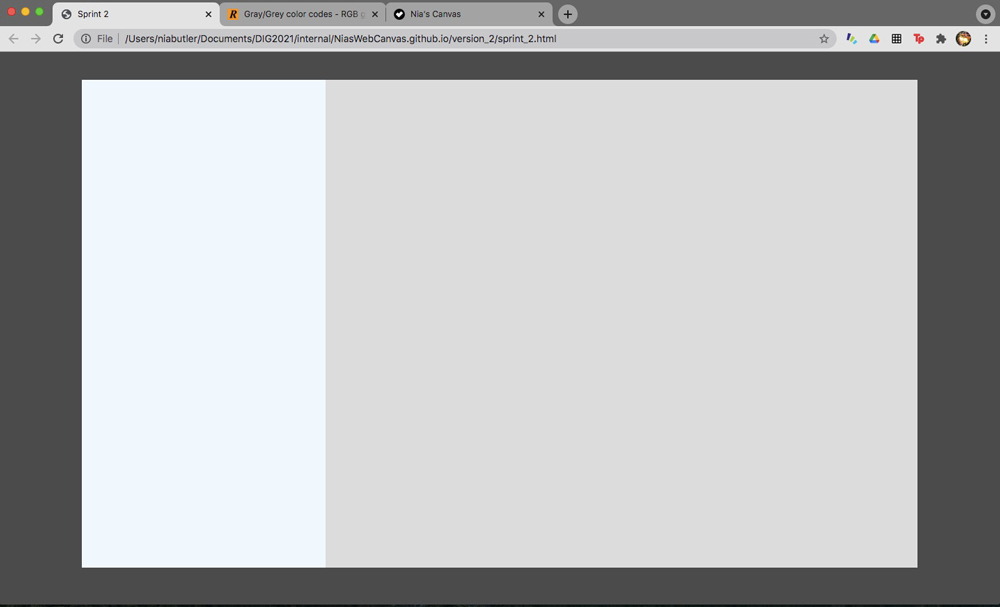Option B
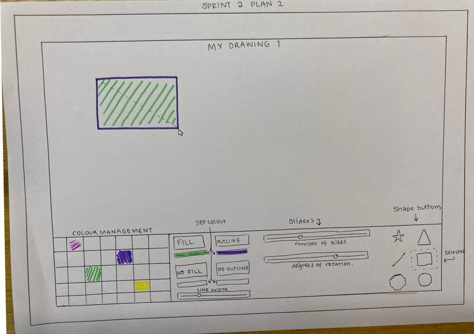The second option I came up with was having a bar down the bottom of the page. Again, everything it out of the way of the canvas, it's just a slightly different setup. I drew inspiration from Google Docs as this application has a very handy top bar, however I did want to change it up so created it below the drawing instead.
Outcome of option B
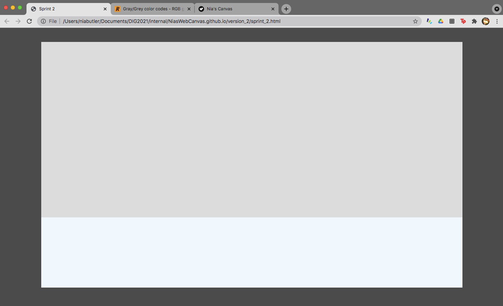Final choice
I decided to go with option A, because for me I think it looks cleaner. Having the bar underneath the drawing was a distraction and you weren't able to look at the image without seeing the bar. Having it to the side means that it can be 'put away' and the drawing canvas can be seen by itself. This adds to the aesthetic of the page, and overall gives the page a simpler and less complicated look.
Link to the Canvas Page: Sprint 2 Canvas Webpage
Testing
Boundary Testing
In this screen recording I am checking to see that the mouse / webpage / canvas is picking up boundaries. The boundaries I created were for the box on the screen, which will be similar to the 'drawing page' of the canvas (see above). The console returns either true or false when the mouse is either in or out of the boundaries it was given.
Test 1 with a random box for boundaries
Testing with my drawing area
Testing that true and false boundaries uphold when the user clicks and drags out of the boundaries
In this screen recording, I am testing to see if the boundaries check (returns true or false) still upholds when the user clicks and drags to instantiate a new rectangle. From this test I can see that a rectangle is being instantited even if the click and drag 'draw guide' is not showing up on the screen. This is a problem that needs to be fixed before I move on to the next version. However when the mouse is 'out of bounds' the draw guide is not showing up which means the boundaries are upholding and the user isn't able to draw outside of the canvas.
Testing the draw guide function when the mouse is in or out of bounds
In this screen test, I am testing to see if the draw guide function works only when inside of the boundaries. From this test I can see that if the mouse is clicked and dragged from inside the boundary then the rectangle outline is drawn however as soon as the mouse is dragged out of the 'drawing space' then the outline disappears. A problem that I encountered was when the mouse was clicked and dragged from outside the boundary (the drawing area), it didn't draw the 'draw guide' however as soon as the mouse was dragged inbounds, the draw guide did show up on the screen outside of the canvas. This means that the boundaries had been put in the wrong function and need to be in the mouse down function.
Testing the clip function
In this screen test, I am testing to see if the draw guide function works only when inside of the boundaries. From this test I can see that if the mouse is clicked and dragged from inside the boundary then the rectangle outline is drawn however as soon as the mouse is dragged out of the 'drawing space' then the outline disappears. A problem that I encountered was when the mouse was clicked and dragged from outside the boundary (the drawing area), it didn't draw the 'draw guide' however as soon as the mouse was dragged inbounds, the draw guide did show up on the screen outside of the canvas. This means that the boundaries had been put in the wrong function and need to be in the mouse down function.
Reflect
This version involved a lot of boundary testing which was important to ensure a functional programe in the future, like a future proofing sprint. Next sprint would like to add buttons in order to have another shape option. I am now starting to expand the program and its functions and tasks that it is able to complete, as I have now set up the basic layout and functionality of mouse actions etc.
Sprint Three
Aim:
The aim of this sprint is to create a button as an option to change the shape that is being drawn. Clicking the button means that when you click and drag the mouse, it will draw an elllipse instead of a rectangle.
Plan / Kanban
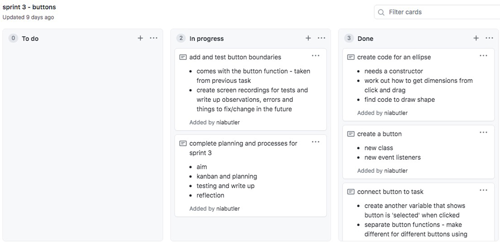Link to the Canvas Page: Sprint 3 Canvas Webpage
Testing
Test 1
In this test I am checkign the boundaries of the buttons by console logging the inbounds check. Returning false means the mouse is out of bounds and true - inBounds. It is important to carry out these tests because I need to know that the mouse events are being picked up now so that in the future there are no problems.
Test 2
In this test, I am checking that everything is running functionally as I have completed all the steps in my sprint 3. One thing that I picked up in this test was that if I wanted to draw a shape on top of another I could, however I couldn't see how big I was drawing the new shape as the draw guide did not show up in front of the shape that was already there. This is a problem with the ordering of objects on the screen, something that I will look into next sprint. Something that is working well is that when selected the button is staying selected when the user is drawing their shape so that they know which shape they have selected and are drawing. This is clear communication to the user of what the program is doing.
Reflect
In this sprint, I added a major component to the canvas. Buttons will be used from here forward for any other functions that I add to the canvas. It was important that I tested the buttons to check if the boundaries were working and being picked up by the mouse. This will hopefully erase any futher problems in the future and allow for easy building to the web canvas. Next sprint I would like to add in some colour management, which will also include buttons and try to create a gradient slider.
Sprint Four
Aim:
The aim of this sprint is to introduce colour management into the canvas. This will enable the user to pick and choose colours for their shapes, a simple but useful function of the drawing page.
Plan / Kanban
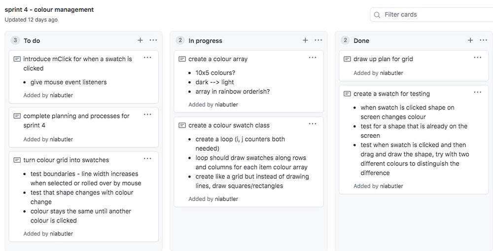Link to the Canvas Page: Sprint 4 Canvas Webpage
My Options
When planning the colour management for my sprint there were a number of different ways I could implement colour management into my canvas webpage. One of these ways was to have colours in a grid but have a seperate gradient slider to control the gradient of the colour. I decided against this because it would have taken up too much of my time and the gradient of each colour can be more easily implemented through a whole swatch palette. One thing to consider is that to the user, the colours look lighter but it is not clear how transparent the colour is. An option around this would to label the swatches by row, however I have also opted against this as it would ruin the simplistic design of the page, and is something that users can work out on their own wihtout causing too much harm or stress.
Here is my swatch and gradient slider combo plan:
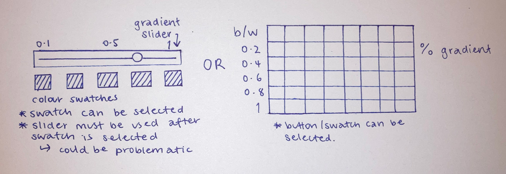Testing
Test 1 - Testing two swatches
First I created two swatches to test the function of them. I tested using boundary checks by increasing the line width of the ouside when hovered on. I also tested using the colour swatches to change the colour of the shape being drawn. Something that I learned from these tests was that the new shape is always drawn in front of what ever is on the canvas. I like that this is happening because I think that it makes more sense for the user when they are creating new shapes. One thing that I could do to improve this in the future is for the shape to be able to change when it has already been drawn. At the moment the colour must be chosen first before drawing the shape and once that happens it cannot change. I would do this by setting a creating a static variable and when clicked is selected so the colour can change. However this is not high on my priority list so I will wait to try this near the end. Another thing I have come up with to add to my project backlog would be to be able to select shapes and move them around the screen. This is also not a high priority so can be thought about later.
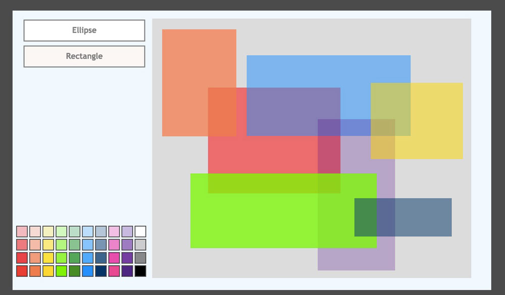
Test 2 - final testing
An error that I came across while testing is that my swatches weren't showing up when I tried to run them through a loop. I decided to run a console log "console.log("colArray")" to check and see if my list of colours was working and I found out that it wasn't recognising the list as colour values and that's why the swatches weren't printing on the screen. However I fixed this issue by cleaning up my code. This was my final test and everything was working properly.
Reflect
Colour management is a fundamental part of my canvas webpage and it's important that I have completed it. From here I can now build on other functions of the canvas such as more shapes or a paintbrush function.
Sprint Five
Aim:
The aim of this sprint is to add more shapes to the canvas. It is meant to be a simple sprint to give the canvas more bulk. I want to add a star and a circle function as extra shapes.
Plan / Kanban
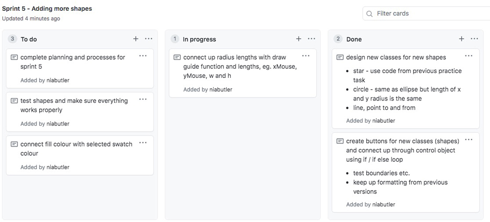Link to the Canvas Page: Sprint 5 Canvas Webpage
Circle vs Ellipse:
All the same except for xR and yR for a circle are the same.
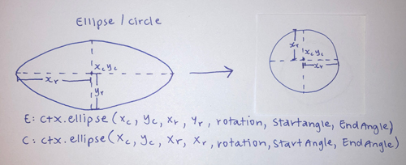Testing
Testing the star function
When I first tested the star function, it came up with many errors as seen on the right. If the draw guide was more of a square shape, then the star ended up being a circle shape with a fringed edge, but if the draw guide was a wide rectangle it gave more of a multi point star, which actually looked quite cool however it wasn’t working how it was meant to. And lastly when the draw guide was a longer rectangle (h>w) it created a circle with a hole in the middle. After lots of fiddling around I found the source of the problem for the number of points - the function was using h to determine the number of points so when h was bigger than w, there would be many point on the big radius as well as the smaller r and that’s why there is a circle in the middle as well. From this I have learnt that the number of outside points a star has will also determine the number of inside points, and if there are lots it will look like a hole in the centre instead of the centre of a star.
Reflect
In this sprint, I had some trouble with creating a working star class, however after fixing and changing a couple of things I got it working again how I wanted it to. Creating the circle class was quite simple as I just had to create a class where the ellipse had the same size radius for both the x and the y axis. I have decided to move on to creating a paint bursh feature next sprint and will add the final shapes - polygon and line functions, in another sprint.
Sprint Six
Aim:
The aim of this sprint is to introduce a paintbrush function to my canvas. This will allow the user to click and drag to draw wherever the mouse goes on the screen.
Plan / Kanban
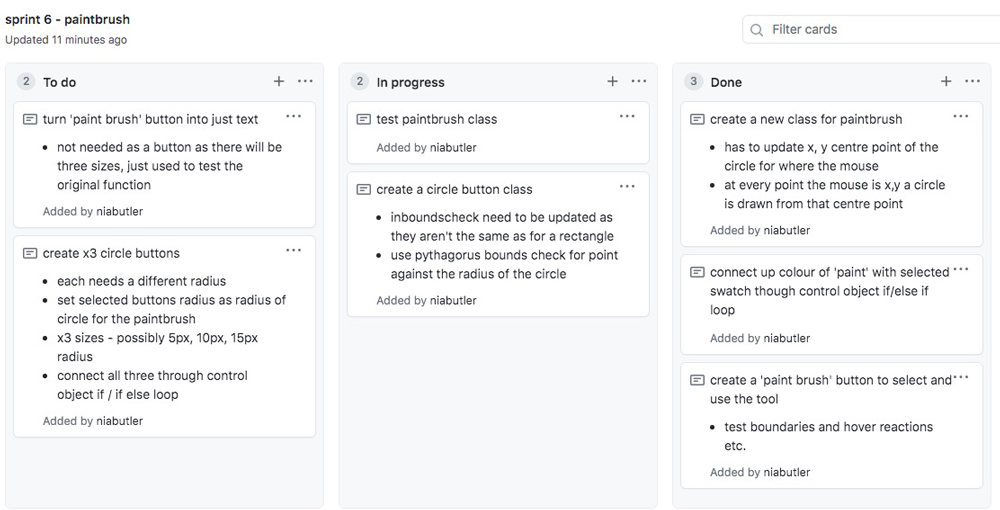Link to the Canvas Page: Sprint 6 Canvas Webpage
Pythagoras Boundary Check:
Original bounds check vs Pythagoras bounds check
inBoundsCheck(xM, yM, x, y, w, h){
if( xM > x && xM < x+w && yM > y && yM < y+h){
return true;
}else{
return false;
}
// -------------------------------------------------
// Pythagoras Distance check
// @ param x,y, positions of the mouse and of
// point circle and radius of point circle (number)
// @ return boolean
inBoundsCheck(xM, yM, x, y, r){
var d = Math.sqrt( Math.pow(xM-x, 2) +
Math.pow(yM-y, 2));
if(d < r){
return true;
}else{
return false;
}
}
inBoundsCheck(xM, yM, x, y, w, h){
if( xM > x && xM < x+w && yM > y && yM < y+h){
return true;
}else{
return false;
}
// -------------------------------------------------
// Pythagoras Distance check
// @ param x,y, positions of the mouse and of
// point circle and radius of point circle (number)
// @ return boolean
inBoundsCheck(xM, yM, x, y, r){
var d = Math.sqrt( Math.pow(xM-x, 2) +
Math.pow(yM-y, 2));
if(d < r){
return true;
}else{
return false;
}
}
Pythagoras Distance Check for Circle Buttons
For the buttons that control the size of the brush for the paintbrush function, I decided to use circles to indicate the width of the brush. To do this I had to create a different button class which was shaped as a circle. The difference between this and a normal button first of all is the shape but because this was different I also had to update the boundaries of the button so that the mouse event listeners would pick up the boundaries more accurately. For this I had to use a pythagoras distance check which measures how far away the mouse is compared to the radius of the circle. On the right at the top is the normal bounds check for the rectangle buttons and on the bottom is the new pythagoras boundary check for the circle buttons
Testing
Testing the different brush sizes
After creating three different circle buttons to control the size of the 'brush', I decided to test them to see if they were working properly. When doing this I discovered that when another brush size was selected and used, that it drew both the new one and the previous brush size and colour. This issue came up because when another brush was selected, the previous brush wasn't being deselected or it didn't realise that the mouseUp meant the function was finished. To fix this I implemented a new part to the class which had a variable that controlled the selection of each button with true or false.
Frame updates
One thing that I noticed when I was creating my paintbrush function, is that if the mouse moves swiftly across the screen the brush appears broken as it shows circles instead of a line. This is because the screen updates at 40 frames per second so if the mouse moves faster than that, then not as many circles are drawn, so the line appears broken. I tried to fix this however I am unable to change the frame update speed as it depends on which browser is being used so this is something that will have to stay in program.
Reflect
The paintbrush feature was quite low down on my project backlog so I am glad I have been able to create it. After creating a new circle button, new inbounds check for the circle button and a deselection function, thorough testing was carried out and my paint brush feature now works properly.
Sprint Seven
Aim:
The aim of this sprint is to create a polygon shape and be able to change thet number of sides the polygon has. I would also like to add in a draw line option where the user can choose the width of the line.
Plan / Kanban
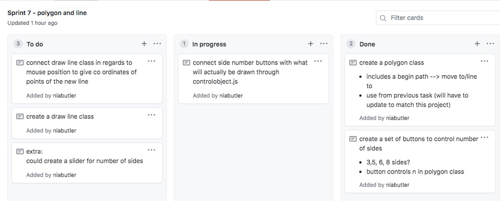Link to the Canvas Page: Sprint 7 Canvas Webpage
My Options
When designing the polygon function for my canvas webpage, I decided to spice it up a little so I considered adding a slider to control the number of sides of the polygon. However, due to not understanding how the canvas would pick up the chosen option on the slider and also the design of the slider class itself, I decided to go with buttons which have the number of sides on them. I thought this would be easier for the user to understand which option they were choosing and also for the canvas to understand which polygon to draw, determined by the name of the selected button. If I am going to choose to complete option 2, I will also need to design a text class as if I created a button for 'Polygon', it would be useless because the user would still have to select a second button for the number of sides, so to simplify I can have text above the buttons explaining what they mean without having a useless button.
Slider vs Button option plan:
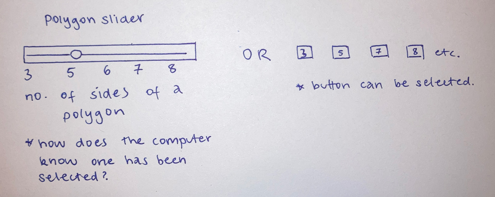Testing
Testing the polygon and line function
Here I am testing both the line function and the polygon. All of the shapes / widths of the lines change when the button is clicked which means it is working properly however if I choose a line width for the line, it changes the width of the draw guide box as well. When I went through my code I found that the code I had used to set the width of the draw guide was not a proper java script function and that I had ctx.linewidth in stead of ctx.lineWidth with a capital W. When I changed this, the draw guide started working properly again.
Reflect
My canvas now has many different working functions so is near the end of completion. In this sprint I had to create a text class because I needed to show that a polygon could be made not just have buttons with numbers on them otherwise the uuser wouldn't understand. This problem was easy to fix and I also used the text class for the paintbrush and line functions. Next sprint I will add some final touches to my canvas and then it will be finished!
Sprint Eight
Aim:
The aim of this sprint is to add some final touches to my canvas. This will include an animated rotating star, undo and restart options and an update to the draw guide class.
Plan / Kanban
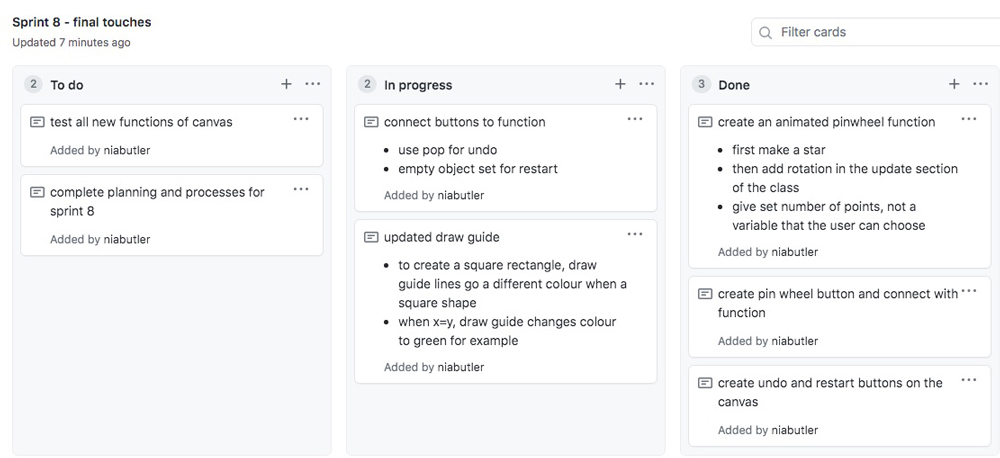Link to the Canvas Page: Sprint 8 Canvas Webpage
Testing
Testing the undo, and restart buttons
When I first tested these buttons both the undo and the restart button cleared the whole canvas so the undo button clearly was not working. However the difference between the two was that the restart button cleared all of the objects at once, but the undo button cleared them one by one just very quickly. To see what was hapenning I console logged the object set to see how each object was disappearing and this confirmed my suspicions. Each object was being removed one by one because there was nothing stopping the button from being unselected. To change this I added Button.selected=""; to the end of each button function (undo and restart) to de select the button. When I tested it again everything worked and the undo button only removed the last object in the object set.
Testing the pinwheel and draw guide update
Here I am testing the pinwheel and the updated draw guide. The first time I tested the pinwheel, I couldn't manage to get it to turn, instead the rotate code managed to draw the stars on the radius of a circle. This meant that the rotation code wasn't quite working. To fix this, I had to add a counter to the update part of the function and for every count it went up, the star rotated. I am able to change the rotating speed by dividing it to make it smaller, which gave me more control of what the user was drawing. As seen in the test, the draw guide turns green when it makes a square (x=y). This is helpful for the user as there is no square button, but instead a rectangle object can be made with the same length sides.
Reflect
Completing these last few tasks means that I have finished my program. I am very happy with how it turned out and I even got to add in features from my project backlog which I didn't think would happen. Overall, the functions of my canvas all work and with some user tests, I have seen how others would also interact with it.
Relevant Implications
Usability
Usability is how understandable and easy to use the program is, to someone who has never used it before, ie. a customer. A user should be able to recognise, diagnose and recover from errors without it disrupting the flow of the program, however even better, the application should be able to fix minor errors without the user knowing. When creating my webpage, it was really important for me that I designed it so that users could understand the tasks with ease. For me this included having large buttons with clear text, bright colours for the drawing guide and a clean simple background so that the user could focus primarily on their creation. When a button or shape is hovered on or selected, it becomes bold, showing the user what they have selected, making it easier for the user to see what they have selected. The undo and redo buttons were a crucial part of the usability of the the webpage, enabling the user to have control over what they are creating by being able to remove an object from the screen or completly start over, so it was important that they were bold and clear.
Functionality
The relevant implication, functionality, is about making sure the canvas works correctly without interfering with the users experience. This means that it doesn't crash or stop working and that all of the button tasks function correctly. To adress this relevant implication, I have broken the project into sprints in order to check that everything works before creating and implementing a new function for the webpage. For each sprint I carried out thorough testing to examen the functionality of each new attribute to the canvas. This included boundary testing for different objects including the control object, the drawing canvas area and each button on the screen whether it was a circle or rectangle shape as well as testing drawing different shapes and seeing that they worked properly. To help find problems in the code I used the console.log("") function to check if new objects were being instantiated or if a list was running through a loop properly. To stop the program from crashing I have used Math.abs for variables such as mouse position or length of sides so that any negative values become positive and the program can use them to draw shapes.
Future Proofing
Future proofing is making the code accessible to yourself and others to edit, change and update in the future. If someone else was to come and takeover the program, they should be able to efficiently work out how the program works, determine the purpose of each function and understand the javascript. To address this implication, I have gone through and commented the code. This means I have added clear comments in simple english instead of coding 'lingo' throughout the different files to help the user understand what is going on. This included explanations for required parameters and functions of different commands such as mouseUp and mouseDown. In the future if I was to go back to the code or someone else was to open it up, they would understand what is happening so that it can easily be updated or changed. This code is also based around creating new objects each time a new function is added, meaning that someone can go in and create new objects without disturbing the rest of the code, making it easier to update or improve.
Overall reflection
Overall I think I have created a canvas webpage that works functionally and is user friendly. Using github has allowed me to control and keep up to date each sprint or version of my code. This method of project management worked well for me because I was able to see the work I had completed and which helped break down a big process into smaller bits, making it easier to handle and feel accomplished. Using Agile meant that each individual sprint was specific to a function and an idea in the overall program. Working idea by idea helped me to develop a program that was user friendly and I knew would work because of the testing that had been completed. Testing was a really important part of this proccess because it meant that I could fix problems at their root and make sure everything worked before adding moving on to making another function or attribute to the canvas. This stopped any major problems popping up and meant that by the time the canvas was finished it was working fucntionally with no errors or crashes. Next time I complete a project like this, I want to create user stories to get a better understanding of what a user would want to use or have available on the canvas. If I were to complete this task again, I would create some questionaires or quizzes for people who would use this to try and make it similar to their feedback. I would also collect general feedback after each version from someone who didn't know the project very so that I could create a program which is user friendly and giving users what they want.